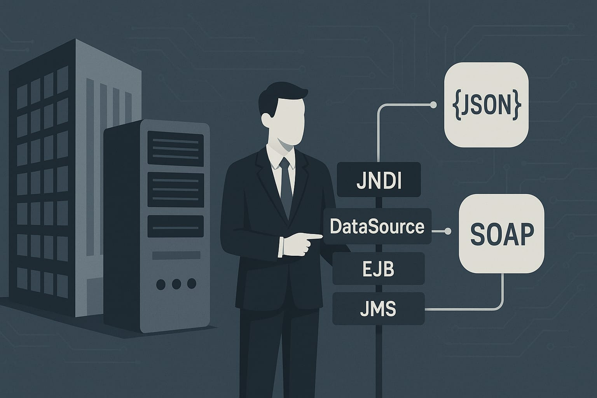

JAX-RS, JAX-WS e JNDI: Fundamentos da Integração no Jakarta EE

Figura 1 — Integração entre sistemas legados e APIs (Jakarta EE).
Introdução
Em um cenário empresarial cada vez mais conectado, a capacidade de integrar sistemas legados com tecnologias modernas tornou-se fundamental para o sucesso organizacional. O Jakarta EE oferece um conjunto robusto de tecnologias que facilitam essa transição, permitindo que empresas mantenham a confiabilidade de seus sistemas existentes enquanto abraçam as demandas da era digital.
Este artigo explora três pilares essenciais dessa transformação: JAX-RS para APIs RESTful, JAX-WS para serviços SOAP, e JNDI para gerenciamento de recursos. Compreender essas tecnologias é crucial para arquitetos e desenvolvedores que buscam modernizar infraestruturas corporativas sem comprometer a estabilidade operacional.
O Cenário: Modernização de Sistemas Legados
Muitas organizações enfrentam o desafio de operar sistemas que, embora confiáveis e funcionais, carecem de capacidades modernas de integração. Esses sistemas frequentemente:
- Operam de forma isolada, dificultando a integração com parceiros
- Carecem de APIs modernas para aplicações web e mobile
- Apresentam limitações na comunicação com serviços em nuvem
- Requerem interfaces padronizadas para interoperabilidade
A evolução desses sistemas não implica necessariamente em substituição completa, mas sim na criação de pontes tecnológicas que permitam comunicação eficiente com o ecossistema digital contemporâneo.
JAX-RS: APIs RESTful Enterprise
Conceitos Fundamentais
O JAX-RS (Java API for RESTful Web Services) representa a abordagem moderna para exposição de funcionalidades empresariais através de APIs REST. Esta tecnologia permite criar serviços leves, performáticos e altamente consumíveis por diferentes tipos de clientes.
Características Principais
- Simplicidade arquitetural: Baseado em princípios REST fundamentais
- Flexibilidade de formato: Suporte nativo para JSON, XML e outros formatos
- Integração transparente: Funciona harmoniosamente com outros componentes Jakarta EE
- Escalabilidade: Otimizado para aplicações de alto volume
Implementação Prática
@Path("/clientes")
@Produces(MediaType.APPLICATION_JSON)
@Consumes(MediaType.APPLICATION_JSON)
public class ClienteResource {
@GET
public Response listarClientes() {
List<Cliente> clientes = clienteService.buscarTodos();
return Response.ok(clientes).build();
}
@POST
public Response criarCliente(Cliente cliente) {
Cliente clienteCriado = clienteService.salvar(cliente);
return Response.status(Response.Status.CREATED)
.entity(clienteCriado)
.build();
}
@GET
@Path("/{id}")
public Response buscarCliente(@PathParam("id") Long id) {
Cliente cliente = clienteService.buscarPorId(id);
return cliente != null ?
Response.ok(cliente).build() :
Response.status(Response.Status.NOT_FOUND).build();
}
}
Vantagens Estratégicas
O JAX-RS oferece uma interface moderna e intuitiva, ideal para:
- Aplicações web single-page (SPAs)
- Aplicativos móveis nativos
- Integrações com sistemas de terceiros
- Arquiteturas de microsserviços
JAX-WS: Serviços SOAP Corporativos
Contexto e Aplicabilidade
O JAX-WS (Java API for XML Web Services) mantém relevância significativa em ambientes corporativos que demandam contratos formais, segurança avançada e interoperabilidade com sistemas legados. Embora REST tenha ganhado popularidade, SOAP continua sendo a escolha preferencial para cenários específicos.
Características Distintivas
- Contratos rigorosos: Definição formal através de WSDL
- Segurança robusta: Suporte nativo para WS-Security
- Transações complexas: Capacidade para operações ACID distribuídas
- Interoperabilidade: Padrão maduro com amplo suporte multiplataforma
Implementação Estruturada
@WebService(serviceName = "PedidoService")
@SOAPBinding(style = SOAPBinding.Style.DOCUMENT)
public class PedidoServiceImpl {
@WebMethod(operationName = "confirmarPedido")
public ConfirmacaoResponse confirmarPedido(
@WebParam(name = "pedidoId") Long pedidoId,
@WebParam(name = "observacoes") String observacoes) {
try {
Pedido pedido = pedidoService.confirmar(pedidoId, observacoes);
return new ConfirmacaoResponse(
pedido.getId(),
"CONFIRMADO",
pedido.getDataConfirmacao()
);
} catch (PedidoException e) {
throw new WebServiceException("Erro na confirmação: " + e.getMessage());
}
}
@WebMethod(operationName = "consultarStatus")
public StatusResponse consultarStatus(@WebParam(name = "pedidoId") Long pedidoId) {
Pedido pedido = pedidoService.buscarPorId(pedidoId);
return new StatusResponse(pedido.getId(), pedido.getStatus());
}
}
Cenários de Uso Ideais
JAX-WS é particularmente adequado para:
- Integrações B2B com contratos rigorosos
- Sistemas bancários e financeiros
- Aplicações que requerem auditoria detalhada
- Ambientes com requisitos específicos de segurança
JNDI: Uma história para leigos
Imagine um prédio comercial onde cada sala tem um propósito: uma sala é o banco de dados, outra é a sala de correios, outra é o cofre com documentos importantes. Os funcionários (as suas aplicações) precisam desses recursos para trabalhar, mas não sabem exatamente em qual andar ou sala eles estão — e não deveriam se preocupar com isso.
O JNDI funciona como o recepcionista desse prédio: você pede "a chave do cofre" ou "o número da sala do banco de dados" usando um nome simples, e o recepcionista devolve a informação de onde encontrar aquilo — sem que o funcionário precise saber o mapa do prédio.
Na prática, quando uma API REST (JAX-RS) ou um serviço SOAP (JAX-WS) precisa de uma conexão com o banco, de uma fila para enviar notificações ou de um serviço legado, em vez de codificar caminhos fixos, ela pede ao JNDI pelo nome do recurso. O servidor (o prédio) já sabe onde está cada coisa e fornece o acesso conforme a configuração do ambiente.
Por que isso importa:
- Flexibilidade: o mesmo código pode rodar em ambientes diferentes (desenvolvimento, homologação, produção) sem mudanças, porque o JNDI resolve onde estão os recursos.
- Segurança e controle: credenciais e detalhes de conexão ficam no servidor, não no código-fonte.
- Organização: a aplicação foca na lógica de negócio; a infraestrutura gerencia onde e como os recursos estão disponibilizados.
Nota técnica curta
Tecnicamente, o JNDI (Java Naming and Directory Interface) é a API que permite lookup e binding de recursos no contêiner Jakarta EE. Recursos como DataSource, EJBs e conexões JMS são tipicamente registrados pelo administrador do servidor e recuperados pela aplicação via @Resource, @EJB ou via API de InitialContext.lookup. Esta separação entre código e configuração é o que torna a integração entre JAX-RS e JAX-WS com os recursos do servidor mais robusta e portátil.
Integração Sinérgica das Tecnologias
Matriz de Complementaridade
| Tecnologia | Finalidade Principal | Usa JNDI | Formato de Dados | Casos de Uso |
|------------|----------------------------|------------------------|------------------|------------------------------|
| **JAX-RS** | APIs RESTful modernas | (recursos internos) | JSON/XML | Web, Mobile, Microsserviços |
| **JAX-WS** | Serviços SOAP corporativos | (EJBs, DataSources) | XML | B2B, Sistemas legados |
| **JNDI** | Localização de recursos | N/A | N/A | Infraestrutura, Configuração |
Arquitetura Unificada
A verdadeira potência dessas tecnologias emerge quando utilizadas em conjunto:
@Path("/integration")
public class IntegrationResource {
@EJB // Localizado via JNDI
private LegacySystemService legacyService;
@Resource(lookup = "java:/comp/env/ws/ExternalServiceRef")
private ExternalSoapService soapService; // JAX-WS client
@GET
@Path("/unified/{id}")
public Response getUnifiedData(@PathParam("id") String id) {
// Combina dados de sistema legado via EJB
LegacyData legacyData = legacyService.fetchData(id);
// Enriquece com dados externos via SOAP
ExternalData externalData = soapService.getExternalInfo(id);
// Retorna dados unificados via REST
UnifiedResponse response = new UnifiedResponse(legacyData, externalData);
return Response.ok(response).build();
}
}
Estratégias de Implementação
Abordagem Gradual
- Avaliação do Sistema Atual
- Identificação de pontos de integração existentes
- Análise de requisitos de performance e segurança
- Mapeamento de dependências críticas
- Implementação Incremental
- Início com APIs REST para funcionalidades menos críticas
- Manutenção de interfaces SOAP para sistemas legados
- Configuração progressiva de recursos via JNDI
- Otimização Contínua
- Monitoramento de performance das APIs
- Ajuste fino de configurações de recursos
- Evolução gradual da arquitetura
Considerações de Segurança
- Autenticação e Autorização: Implementação de mecanismos robustos em ambas as tecnologias
- Validação de Dados: Sanitização rigorosa de inputs em APIs REST e SOAP
- Auditoria: Logging detalhado de operações críticas
- Configuração Segura: Gestão adequada de credenciais via JNDI
Conclusão
A modernização de sistemas empresariais não é meramente uma questão técnica, mas uma decisão estratégica que impacta diretamente a capacidade de inovação e competitividade organizacional. As tecnologias JAX-RS, JAX-WS e JNDI do Jakarta EE oferecem um caminho estruturado e confiável para essa transformação.
JAX-RS estabelece a fundação para APIs modernas, proporcionando agilidade e flexibilidade necessárias para aplicações contemporâneas. JAX-WS mantém a conectividade com sistemas legados e parceiros que demandam contratos formais. JNDI atua como o tecido conectivo que permite acesso transparente aos recursos corporativos.
A combinação inteligente dessas tecnologias permite que organizações mantenham a estabilidade operacional enquanto constroem pontes para o futuro digital. O resultado é uma arquitetura híbrida que preserva investimentos existentes e, simultaneamente, habilita capacidades modernas de integração e inovação.
A jornada de modernização requer planejamento cuidadoso, implementação gradual e monitoramento contínuo. Contudo, as empresas que abraçam essa transformação posicionam-se estrategicamente para prosperar em um ambiente empresarial cada vez mais interconectado e dinâmico.
Artigo técnico sobre integração empresarial utilizando Jakarta EE | Tempo estimado de leitura: 5 minutos
Hashtags: #JakartaEE #JAXRS #JAXWS #JNDI #Integração #APIs #SOAP #REST #JavaEnterprise